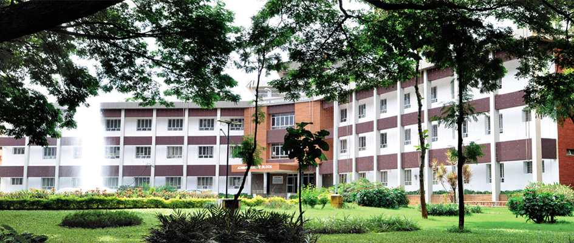

CHIEF PATRONS
Dr. Sree Sree Sivakumara Swamigalu
Founder President, SSES, Tumkur
Sree Sree Siddalinga Swamigalu , President, SSES, Tumkur
PATRONS
Dr. Karisiddappa , Vice-Chancellor, VTU, Belgaum
Sri T.K.Nanjundappa, Secretary, SSES, Tumkur
Dr. M.N.Channabasappa, Director, SIT, Tumkur
Dr. Shivakumaraiah, Principal, SIT, Tumkur
GENERAL CHAIR
Dr. S.S. Iyengar
Director and Ryder Professor
IEEE Fellow Florida International University
Miami, FL 33199
HOSTED BY
Dept of Computer Science and Enginerring
Dept of Information Science and Enginerring

About SIT
Siddaganga Institute of Technology(SIT),Tumkur, Karnataka, India was established in the year 1963.
It is run by Sree Siddaganga Education Society, founded by His Holiness “Dr. Sree Sree Sivakumara Swamiji”, a centenarian. SIT is an autonomous institution, affiliated to Visvesvaraya Technological University (VTU), Belgaum, Karnataka, approved by AICTE, New Delhi and accredited by NBA, New Delhi. At present, the institute offers 12 Under Graduate Programmes and 16 Postgraduate programmes. Sixteen departments in the institute have been recognized as research centers by Visvesvaraya Technological University and offer Ph.D and M.Sc (Engg.) by research. S.I.T. is one among the 14 Engineering Colleges selected by the Government of Karnataka for Technical Education Quality Improvement Programme (TEQIP), a World Bank assisted Project.
About the Conference
ICECIT – 2017 is organized during December 15th and 16th 2017 at Siddaganga Institute of Technology, Tumkur, Karnataka, India. This conference provides an opportunity for the researchers from academia and industry to meet and discuss the problems, latest solutions, scientific results and methods in the field of emerging computations and Information Technologies.
The conference will have several Keynote Speakers from academia and industry whose talks would put everyone through the paces of the trends, developments and future vision in the areas of research related to Computing, Database, Networking and Security.
ICECIT – 2017 invites submissions of original research contributions, as well as descriptions of industrial and application achievements under the following tracks. Computing, Database, Networks and Security. We do encourage submissions relating to all aspects of Computer Science defined broadly, and particularly encourage work on topics of emerging interest in the research and development communities.
Proceedings of the conference will be submitted for inclusion to IEEE Xplore.